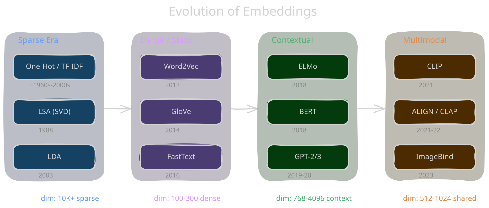

A Brief History of Embeddings

Pre-2013
The Sparse Era
LSA, PMI matrices, TF-IDF. One-hot vectors — no notion of similarity.
2013
Word2Vec Revolution
Skip-gram & CBOW. Weight matrix IS the embedding.
KING-MAN+WOMAN≈QUEEN
KING-MAN+WOMAN≈QUEEN
2018
Contextual Embeddings
ELMo, then BERT. Same word, different vector depending on context. Powered by transformers.
2021+
Multimodal Era
CLIP, ImageBind, CLAP. Images, text, audio in one shared vector space. Cross-modal search and zero-shot classification.